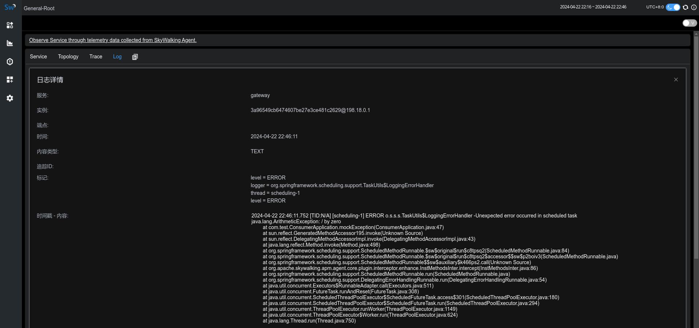
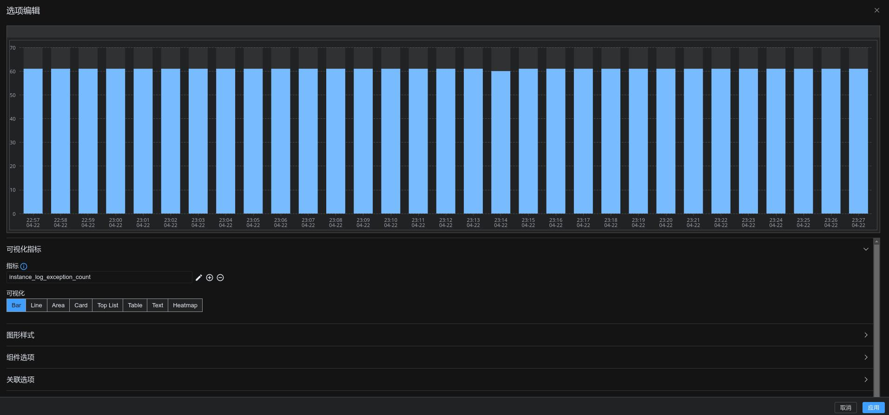
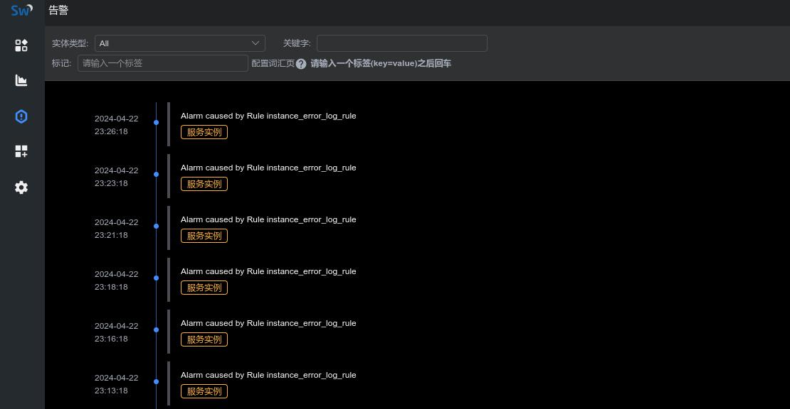

SkyWalking从入门到精通 - 2024系列线上分享活动（第二讲）
本次直播是 Apache SkyWalking 社区和纵目联合举办分享活动的第二讲，由魏翔为大家介绍 SkyWalking LAL(Log Analysis Language)，主要包含以下几部分内容：
- SkyWalking LAL(Log Analysis Language) 语法介绍
- 使用 LAL 监控服务日志异常实验
- OAP log-analyzer 模块源码讲解
实验中涉及到的知识点比较零散，为了方便大家复现实验结果，现将实验步骤整理如下：
1. 接入服务日志至SkyWalking
首先，我们启动 demo 服务，并通过一个定时任务模拟异常，并输出异常至日志中，下面的方法会每秒钟执行一次，因为除数为零，所以会产生 java.lang.ArithmeticException: / by zero 的异常：
@Scheduled(fixedDelay = 1000)
public void mockException() throws Exception {
int i = 1 / 0;
}
2024-04-22 23:03:54 SW_CTX:[gateway,3a96549cb6474607be27e3ce481c2629@198.18.0.1,N/A,N/A,-1] [scheduling-1] ERROR [org.springframework.scheduling.support.TaskUtils$LoggingErrorHandler:95] - Unexpected error occurred in scheduled task
java.lang.ArithmeticException: / by zero
at com.test.ConsumerApplication.mockException(ConsumerApplication.java:47)
at sun.reflect.GeneratedMethodAccessor195.invoke(Unknown Source)
at sun.reflect.DelegatingMethodAccessorImpl.invoke(DelegatingMethodAccessorImpl.java:43)
at java.lang.reflect.Method.invoke(Method.java:498)
at org.springframework.scheduling.support.ScheduledMethodRunnable.$sw$original$run$c8tpsq2(ScheduledMethodRunnable.java:84)
at org.springframework.scheduling.support.ScheduledMethodRunnable.$sw$original$run$c8tpsq2$accessor$$sw$p2boiv3(ScheduledMethodRunnable.java)
at org.springframework.scheduling.support.ScheduledMethodRunnable$$sw$auxiliary$k466ps2.call(Unknown Source)
at org.apache.skywalking.apm.agent.core.plugin.interceptor.enhance.InstMethodsInter.intercept(InstMethodsInter.java:86)
at org.springframework.scheduling.support.ScheduledMethodRunnable.run(ScheduledMethodRunnable.java)
接着，我们为该服务启动参数添加 skywalking agent 启动参数，并接入日志至 skywalking，由于我们demo使用的是logback，我们在 pom.xml 中添加以下依赖：
<dependency>
<groupId>org.apache.skywalking</groupId>
<artifactId>apm-toolkit-logback-1.x</artifactId>
<version>${version}</version>
</dependency>
同时，在logback.xml中添加 skywalking-grpc appender:
<appender name="grpc-log" class="org.apache.skywalking.apm.toolkit.log.logback.v1.x.log.GRPCLogClientAppender">
<encoder class="ch.qos.logback.core.encoder.LayoutWrappingEncoder">
<layout class="org.apache.skywalking.apm.toolkit.log.logback.v1.x.mdc.TraceIdMDCPatternLogbackLayout">
<Pattern>%d{yyyy-MM-dd HH:mm:ss.SSS} [%X{tid}] [%thread] %-5level %logger{36} -%msg%n</Pattern>
</layout>
</encoder>
</appender>
启动 SkyWalking OAP 服务，一切顺利的话，你会在 SkyWalking 日志面板中看到 demo 服务上报的日志信息：

2. 配置 LAL 解析上报的日志并提取指标
默认情况下，SkyWalking只会保存原始的日志数据，不做任何的处理分析，我们修改 config/lal/default.xml:
rules:
- name: default
layer: GENERAL
dsl: |
filter {
text {
abortOnFailure false
regexp $/(?<time>\d{4}-\d{2}-\d{2} \d{2}:\d{2}:\d{2}\.\d{3}) \[.+] \[.+] (?<level>\w+) (?<msg>.*)/$
}
extractor {
tag level: parsed.level
timestamp parsed.time as String, "yyyy-MM-dd HH:mm:ss.SSS"
if (parsed.level == "ERROR") {
metrics {
timestamp log.timestamp as Long
labels service: log.service, service_instance_id: log.serviceInstance
name "log_exception_count"
value 1
}
}
}
sink {
}
}
上面的 dsl 中，首先使用 text regex 解析器解析日志内容，分别解析出了日志的时间、日志等级等信息，大家可以根据需要自行调整 regexp 表达式（如果你的日志是json格式，你也可以尝试json 解析器 ）。
接着 extractor 会从 regexp 解析结果中，提取出日志额外的 tag 以及 timestamp 信息，并且会检查 level，如果 level 级别为 ERROR，就会生成一个名为log_exception_count，值为 1 的指标，在打上 service 及 service_instance_id 标签后，会交给 skywalking meter system 接着处理。
3. 定义 log-mal 进一步分析 LAL 中提取的指标
上一步中，我们定义了日志的解析规则，并成功提取到了 log_exception_count 指标，接着我们定义指标分析规则，创建 config/lal-mal/rules/default.yaml:
metricPrefix: instance
metricsRules:
- name: log_exception_count
exp: log_exception_count.sum(['service','service_instance_id']).downsampling(SUM).instance(['service'], ['service_instance_id'], Layer.GENERAL)
上面的 mal 中，我们指定 downsampling 函数为 SUM，这样可以帮助我们计算一分钟内的错误数和，由于是新创建的文件，别忘了在 config/application.yml 中注册该配置文件：
log-analyzer:
selector: ${SW_LOG_ANALYZER:default}
default:
lalFiles: ${SW_LOG_LAL_FILES:envoy-als,mesh-dp,mysql-slowsql,pgsql-slowsql,redis-slowsql,k8s-service,nginx,default}
malFiles: ${SW_LOG_MAL_FILES:"nginx,default"}
最后我们打开 skywalking-ui，在 dashboard 中添加指标 instance_log_exception_count 并验证指标结果正确性:

4. 配置指标告警规则
有了指标数据后，我们可以在 config/alarm-settings.yml 添加对应的告警规则，该规则定义如果一分钟内日志异常数量超过 5 就会发出告警信息：
instance_error_log_rule:
expression: sum(instance_log_exception_count > 5) >= 1
period: 1
tags:
level: WARNING
配置好以上规则后，我们稍等 1 分钟，便可以在告警记录面板查看到响应的告警信息：

附：想参与直播的小伙伴，可以关注后续的直播安排和我们的B站直播预约